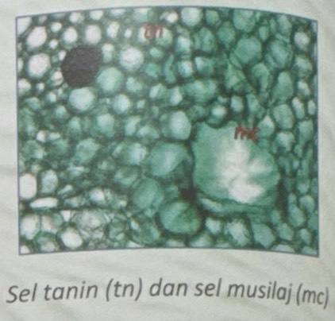

FRIM LIBRARY WEEKLY QUIZ
Week 03 - Question 03

According to the FRIM publication, which part of the bendi contains water-soluble fibre (polysaccharides)?
Abelmoschus esculentus (L.) Moench, commonly known as bendi, okra or lady's finger.